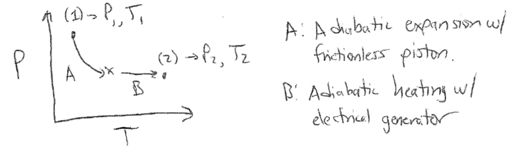

Postulates of thermodynamics#
Recommended textbooks#
Tester and Modell, Ch. 2 and 3
Topics in this lecture#
Four postulates
First Law for open systems
Announcements#
Simulation project due November 7
Thermodynamic integration#
In the last lecture, we discussed umbrella sampling and free energy perturbation as techniques to compute free energies from either Monte Carlo or Molecular Dynamics simulations. We will discuss one final method to close our discussion of molecular simulations. The final technique we will discuss is similar in spirit to free energy perturbation, in that it involves the calculation of the change in free energy between two systems with distinct potential energy functions. In the case of thermodynamic integration, we will explicitly define a linear interpolation between the potential energy functions for the two systems via a coupling parameter, \(\lambda\). We write:
Here, \(E_0(\textbf{r}^N)\) and \(E_1(\textbf{r}^N)\) refer to the two reference states, and the value of \(\lambda\) interpolates the system potential energy function between that of \(E_0\) for \(\lambda = 0\) and \(E_1\) for \(\lambda = 1\). We can now write the derivative of the Helmholtz free energy with respect to \(\lambda\) as follows:
This expression shows that we can relate the change in the free energy of the system with respect to the coupling parameter to an ensemble average of that derivative sampled from an ensemble at a particular value of \(\lambda\), as indicated by the subscript in the angular brackets. We can then calculate the complete free energy difference between system 0 and 1 by:
This final integral is why the technique is called thermodynamic integration. In practice, this integral is evaluated by choosing several discrete values of \(\lambda\), sampling particle configurations according to the potential energy function \(E_\lambda\), and for each sampled configuration calculating the energy using \(E_{\lambda \pm d\lambda}\) where \(d\lambda\) is some small interval. The derivative is approximated from a finite difference between these three values and used to calculate the ensemble average. The integral is then evaluated by quadrature. This approach does not necessarily require a linear coupling parameter, although in practice this is a simple method that is commonly used. It should be noted that the coupling parameter approach, and the division of the thermodynamic integral into multiple discrete values of \(\lambda\), can also be used with free energy perturbation to improve convergence.
Given the similarities to free energy perturbation, thermodynamic integration is often used for similar systems. It has been used extensively in calculating the phase behavior of self-assembled mixtures, in part because thermodynamic integration can be used to calculate the free energy between two phases that differ in their thermodynamic properties, such as temperature, via appropriate selection of a coupling parameter (as opposed to biasing their potential energies).
Summary of molecular simulations#
We have now concluded our discussion of molecular simulations. Starting from the first postulate of statistical mechanics (ergodicity), we defined two simulation techniques: Monte Carlo simulations, which seek to directly sample ensemble-average properties by generating possible system configurations; and molecular dynamics simulations, which seek to model the underlying equations of motion of a system to generate time-averaged properties mirroring experimental values. With respect to the latter approach, we further discussed the definition of the simulation temperature and mechanisms for maintaining a constant temperature in order to sample the canonical ensemble. We then defined various methods for computing free energies, rather than just potential energies, so that we could determine the likelihood of processes occurring at equilibrium. We of course are only scratching the surface of molecular simulations - other topics of interest include methods for maintaining a constant pressure in simulation, methods for sampling systems in the grand canonical ensemble, alternative free energy calculations that do not rely on predefined reaction coordinates, etc. The Frenkel and Smit textbook does continue with several of these topics if you wish to pursue them on your own.
The four postulates of classical thermodynamics#
In this lecture, we will begin our study of classical thermodynamics following a postulatory approach: we will define only four postulates that we accept as fact, and then find that from these postulates alone we can define the entire thermodynamic framework that we have already been using in our study of statistical mechanics. Hopefully through these derivations you will see the beauty of this approach and recognize the logic and consistency that underlies these studies. I encourage you to review the Notation handout that is uploaded to the Canvas website to ensure that you can follow along with the terminology that we will use. We will start by defining the postulates of thermodynamics and begin exploring their implications. Please note that these postulates may be stated in various ways (and their numbering scheme may vary as well) - we follow the postulates as defined in the Tester and Modell textbook Thermodynamics and its Applications.
As a “Postulate 0,” we assume that we have an experimental apparatus capable of measuring system properties and of manipulating the values of system variables as well.
Postulate 1: For closed simple systems with given internal restraints, there exist stable equilibrium states which can be characterized completely by two independently variable properties in addition to the masses of the particular chemical species initially charged.
This postulate defines the concept of equilibrium states in a system as the states of interest that we will consider throughout our studies, just as we did in statistical mechanics. The postulate defines equilibrium states as stable, meaning that their properties are not time-dependent once equilibrium is reached (if no event perturbs the system). An internal restraint refers to a barrier (that need not be physical) to particular processes within the system - for example, an activation energy might exist that prevents the chemical transformation of system components. The statement that the system is completely characterized by two independently variable properties means that one of these properties can be varied while the other is held constant to completely determine the behavior and state of a system. For example, if you were to know the amount of material (i.e., the amount initially charged in the system) in a simple, closed system containing a pure liquid in equilibrium with its vapor, the properties of the system could be completely determined if the volume of the system and its temperature were known as these two properties are independently variable. However, for this system the pressure and temperature are not independently variable (we’ll learn why explicitly later, but this is a consequence of the phase equilibrium between the vapor and liquid), so specifying these two variables is insufficient to determine the properties of the system.
This postulate implies that we will need to find relationships between thermodynamic properties to determine what properties can be independently varied and to understand how to determine the values of other system properties based on these variations. Developing these relations will be a major focus of our studies. If we know these relationships, we can also use them to test for the presence of restraints in the system. We will present examples of these relationships as we proceed.
Postulate 2: In processes for which there is no net effect on the environment, all systems (simple and composite) with given internal restraints will change in such a way as to approach one and only one stable equilibrium state for each simple subsystem. In the limiting condition, the entire system is said to be at equilibrium.
Postulate 2 then tells us that equilibrium states are reached if a system is observed for a sufficiently long amount of time - that is, each simple system (or simple subsystems in a composite system) evolves toward a unique equilibrium state. Postulate 2 is only defined for an isolated system with a given set of internal restraints. Changing the internal restraints (i.e., removing the activation barrier in the previous example) will change the unique equilibrium state of the system in a predictable way (i.e., the system components may undergo a reaction). This observation underscores the importance of understanding and identifying internal restraints in the system. Finally, note that in composite systems, the equilibrium state of the entire system cannot be specified by only two independent variables, but each simple subsystem can be defined by two independent variables. The properties of the composite system are thus defined by the collected properties of the subsystems.
Since Postulate 1 and 2 together introduce the concept of stable equilibrium states that are reached after the time-evolution of a system, we now must introduce the concept of a thermodynamic process. A process defines the changes in the thermodynamic properties of a system that occur when a system has an interaction with the environment or internal restraints are removed or altered. The process includes a description of the two equilibrium end states, prior to and after the process, the interactions occurring at the boundaries of the system, and the set of states through which the system evolves, also known as the path. A path can be quasi-static, meaning that all intermediate states in a process are equilibrium states that can be described with two independently variable parameters. Processes that involve non-quasi-static paths pass through non-equilibrium states that may require additional properties to be specified, and thus do not obey Postulate 1. Various types of processes can be defined. For example, an isothermal process is one in which the temperature is constant. More examples will be provided as we continue our studies. Postulate 2 specifies that the time evolution of a system to an equilibrium state must occur with no effect on the environment, implying that the system is isolated. However, processes can also consist of a series of steps, with individual steps affecting the environment; the net effect across multiple steps must just be zero.
Postulate 3: For any states, (1) and (2), in which a closed system is at equilibrium, the change of state represented by (1) \(\rightarrow\) (2) and/or the reverse change (2) \(\rightarrow\) (1) can occur by at least one adiabatic process, and the adiabatic work interaction between this system and its surroundings is determined uniquely by specifying the end states (1) and (2).
This postulate defines several important pieces of terminology that require some investigation. First, we formally define the concept of work, which we have already used repeatedly in our study of statistical mechanics. Following typical mechanical definitions, the work, \(W\), is defined as the product of a generalized force, \(f\), multiplied by a generalized displacement, \(\Delta x\):
In its most general form, the product of the force and displacement would be a vector product between a force vector \(\vec{f}\) and a vector displacement; we drop this notation for simplicity.
As in statistical mechanics, we will define the sign convention such that the work is positive if work is done on the system by the environment. In general, for all work interactions, the work done on a system by the environment is equal to the work done on the environment by the system; this is a consequence of Newton’s 3rd law and reflects the conservation of energy.
Next, we will define an adiabatic work interaction as an interaction between two closed systems that does not involve a transfer of heat to the environment. Since we have not yet formally defined heat, we can define adiabatic work interactions in terms of an observable experiment - namely, adiabatic work interactions can be performed by the rise and fall of weights in an external gravitational field connected by a frictionless pulley, which we know to be a system described entirely by the work due to gravity. Examples of adiabatic work interactions include compressing a gas with a piston on a frictionless surface, which could be accomplished by raising or lowering a weight attached to the piston, or resistively heating a liquid by doing electrical work, which could be accomplished by tying a rope attached to a weight around a motor and using the motor to send current through a resistor that is inserted in a fluid. In each case, the gas/liquid container is a closed system on which work is done.
 {width=”100%”}
{width=”100%”}
With these definitions, let us now consider the meaning of Postulate 3. The postulate states that while it may not always be possible to go from state (1) to state (2) solely via adiabatic work interactions - i.e., via an adiabatic process - it will always be possible to either go from state (1) to (2) via an adiabatic process or from state (2) to (1) by an adiabatic process. For example, consider a gas in state (1) specified by \(P_1, T_1\) and state (2) specified by \(P_2, T_2\). Suppose that the gas is in a closed system with a piston that controls the system volume. If the gas is expanded adiabatically, the pressure drops from \(P_1 \rightarrow P_2\) and we would observe that the temperature changes (this is due to the relationship between energy and temperature for an ideal gas) To obtain a temperature \(T_2\), we could add an electric generator to the system that is powered by a weight; assuming frictionless wires, this allows us to heat the system to temperature \(T_2\) with the piston fixed such that the pressure is maintained at \(P_2\). This is thus a multistep adiabatic process from state (1) to (2) since the walls and each step is adiabatic. Moreover, the inverse process is not possible, since we cannot cool the system adiabatically by returning heat to the electric generator.
{width=”100%”}
Since an adiabatic process is possible between any two states, Postulate 3 then defines the internal energy of the system, \(\underline{U}\), as a derived parameter (i.e. one that is not directly measurable) equal to the work done during an adiabatic process, since the adiabatic work is only a function of the end states:
Technically, this expression defines the change in the total energy of the system, including the kinetic energy associated with center-of-mass motion in a system, potential energy associated with body forces (i.e. gravity), and the internal energy associated with molecular motions (i.e. translational degrees of freedom, vibrations, rotations), intramolecular effects (electron spin), and intermolecular interactions. We will ignore the first two effects and treat the total energy as the internal energy due to usage of this nomenclature throughout our study of statistical mechanics.
So, in total, Postulate 3 defines the internal energy as a derived parameter that is a function of the states of two stable equilibrium systems. We refer to such a parameter as a state function. Note that only changes in energy are meaningful; we could assign an energy to each state, but only the energy change will matter.
While Postulate 3 states that two states can be connected by an adiabatic process, in principle we can define any process, adiabatic or non-adiabatic, between the two states and the change in total energy will be unchanged (since it is uniquely defined as the work done along the adiabatic path). This observation leads to our definition of heat: heat is the difference in the total energy change during a particular process and the actual work performed. We can write this as:
This relation is referred to as the first law of thermodynamics - the change in the energy of a system is always the sum of the heat (which is positive if heat is added to the system) and the work (which is positive if work is done on the system by the surroundings) during a process. Here we use the symbol \(\delta\) to indicate that the associated parameter is path-dependent; while the energy change is a fixed function of the initial and final state, the amount of heat and work transferred depends on the path between the two states. Note that we will use the phrase “transfer heat” but this just means that energy is transferred via a heat interaction - there is no heat that is intrinsic to a state that is transferred. For a system to undergo a heat interaction, there must be at least one non-adiabatic or diathermal wall, but having a diathermal wall does not imply that a system will necessarily undergo a heat interaction.
Postulate 4: If the sets of systems \(A\), \(B\) and \(A\), \(C\) each have no heat interaction when connected across nonadiabatic walls, then there will be no heat interaction if systems \(B\) and \(C\) are also so connected.
This postulate effectively defines the concept of thermal equilibrium - systems connected across non-adiabatic walls that do not have a heat interaction are at thermal equilibrium, and thus any two systems that are connected to a third system that all experience no heat flow must have the same temperature (which we have not strictly defined; suffice to say it is the quantity that its equivalent for systems for which there is no heat transfer). This postulate thus requires the definition of the temperature as an intensive parameter that is equal for two systems connected by nonadiabatic walls that undergo no heat interaction.